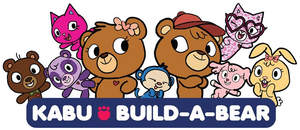

Trade Mark Journal No.2025/015 11 April 2025
UK00004178482 24 March 2025 (9,25,28,35,41)

- Class 9
- Downloadable mobile applications for viewing, playing, and purchasing animated entertainment and electronic games; downloadable video game software; Apparatus for recording, transmission, processing, and reproduction of sound, images, or data; digital media, namely, pre-recorded downloadable audio and video recordings, CDs, DVDs, high definition digital discs, mp3 files and mp4 files featuring live-action entertainment, animated entertainment, music, stories, children's programming, dramatic performances, non-dramatic performances, learning activities for children, and games; audio and visual recordings featuring live-action entertainment, animated entertainment, music, stories, and games for children; downloadable podcasts in the field of general entertainment, news, interviews, stories, music, and culture; musical recordings; downloadable electronic publications in the nature of children's stories in illustrated form.
- Class 25
- Clothing, namely, shirts, t-shirts, pullovers, leggings, hoodies.
- Class 28
- Toys, stuffed toy animals, plush toy animals and accessories therefor, and carrying cases for toys, plush toy animals, stuffed toy animals and accessories therefor.
- Class 35
- Retail store services in the fields of toys, stuffed toy animals, plush toy animals and accessories therefor, carrying cases for toys, plush toy animals, stuffed toy animals and accessories therefor, and clothing, namely, shirts, t-shirts, pullovers, leggings, hoodies; retail store services via a global computer network in the fields of toys, stuffed toy animals, plush toy animals and accessories therefor, carrying cases for toys, plush toy animals, stuffed toy animals and accessories therefor, and clothing, namely, shirts, t-shirts, pullovers, leggings, hoodies.
- Class 41
- Distribution and display of non-downloadable digital multimedia and audio and visual content, namely, motion picture films, television programs, and multimedia entertainment and educational content in the nature of non-downloadable videos, images, and audio clips in the field of live-action, comedy, drama, education, interviews, music, and animated content; entertainment services, namely, an ongoing television series featuring animation, adventure, drama, and comedy through cable television, broadcast television, internet, video-on-demand, and other forms of transmission media; rental of motion picture films, television programs, and multimedia content; provision of non-downloadable motion picture films, television programs, and multimedia entertainment content in the nature of non-downloadable videos, images, and audio clips in the field of live-action, comedy, drama, education, interviews, music, and animated content via a video-on-demand service and distributed via various platforms across multiple forms of transmission media; providing online non-downloadable audio and visual recordings featuring live-action, comedy, drama, music, and animated content; entertainment services, namely, providing online non-downloadable interactive multimedia programs in the nature of games for distribution via audio and visual media, and electronic means; providing online computer games; providing a website featuring entertainment information and news relating to motion picture films, television programs, musical videos, film clips, and photographs; providing on-line information in the field of motion picture films, television programs, musical videos, film clips, and photographs via the Internet; providing online non-downloadable multimedia entertainment content in the nature of non-downloadable videos and non-downloadable graphics in the field of live-action, comedy, drama, education, interviews, music, and animated content.
Build-A-Bear Workshop, Inc.,
Representative: Lucas & Co